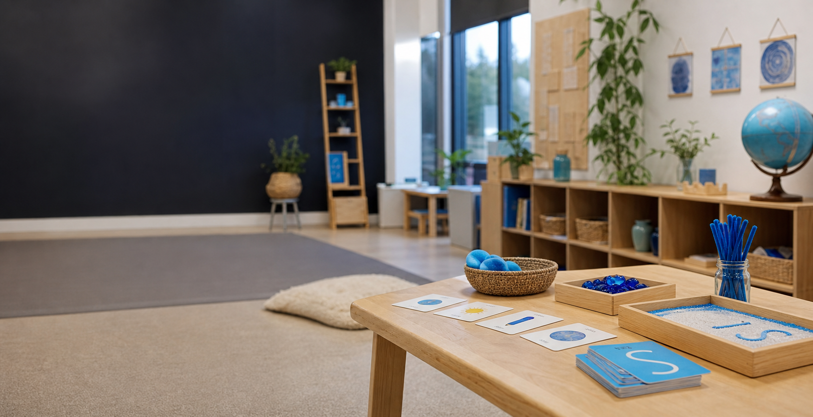

Education & Instruction
Early Years Education, Child Development, Play-Based Learning, Differentiated Instruction, Phonics & Numeracy, Learning Support

Early Years Educator
Kindergarten teacher and early-years specialist creating inclusive, child-centred classrooms through play-based learning, phonics, sensory exploration, and thoughtful family partnerships.
About Me
Shehla Fakih is an Early Years professional with experience as a KG1 Homeroom Teacher and KG2 Teaching Assistant in an international school environment. Her work focuses on play-based learning, classroom management, phonics instruction, sensory activities, and individualized student support.
With a psychology background and ongoing NCFE CACHE Level 3 training, Shehla designs practical learning experiences that support academic, social, emotional, fine motor, and gross motor development.
Skills
Early Years Education, Child Development, Play-Based Learning, Differentiated Instruction, Phonics & Numeracy, Learning Support
Classroom Management, Behaviour Management, Parent Communication, Inquiry-Based Learning, Individualized Support
Microsoft Office, AI Tools, Digital Content Creation, Social Media Management, PowerPoint Presentations, Video Editing
Experience
September 2022 - Present
Delhi Public School, Daratassalam International, Riyadh
September 2019 - March 2021
Delhi Public School, Daratassalam International, Riyadh
April 2018 - May 2018
International Indian Public School, Riyadh
Projects
Curriculum Resource
Led the creation and publication of a practical Early Years activity book that became a core teaching resource across the school from 2024 onward.
[Link to Work Sample]Digital Content
Planned, filmed, edited, and published 60+ classroom activity videos that made student learning visible and strengthened parent engagement.
[Link to Live Demo]Learning Design
Designed 100+ hands-on activities spanning sensory exploration, phonics, numeracy, fine motor skills, and gross motor development.
[Link to Work Sample]Education & Credentials
2019 - 2023
Arden University, UK
September 2025 - In Progress
Professional certification in progress
2024
University at Buffalo
Contact